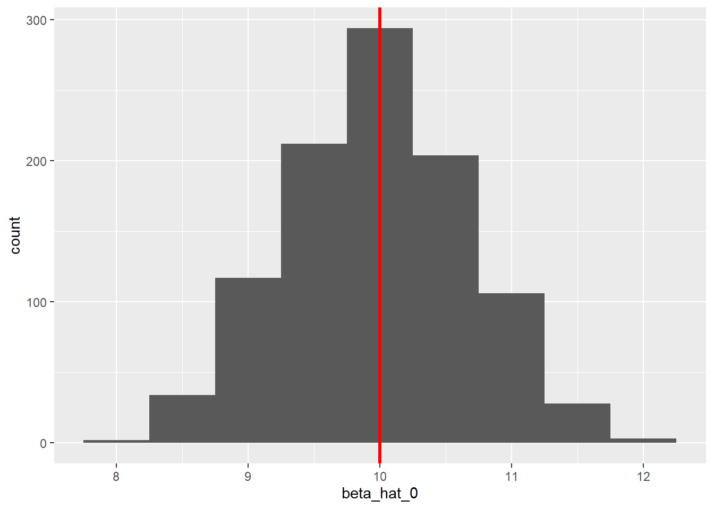
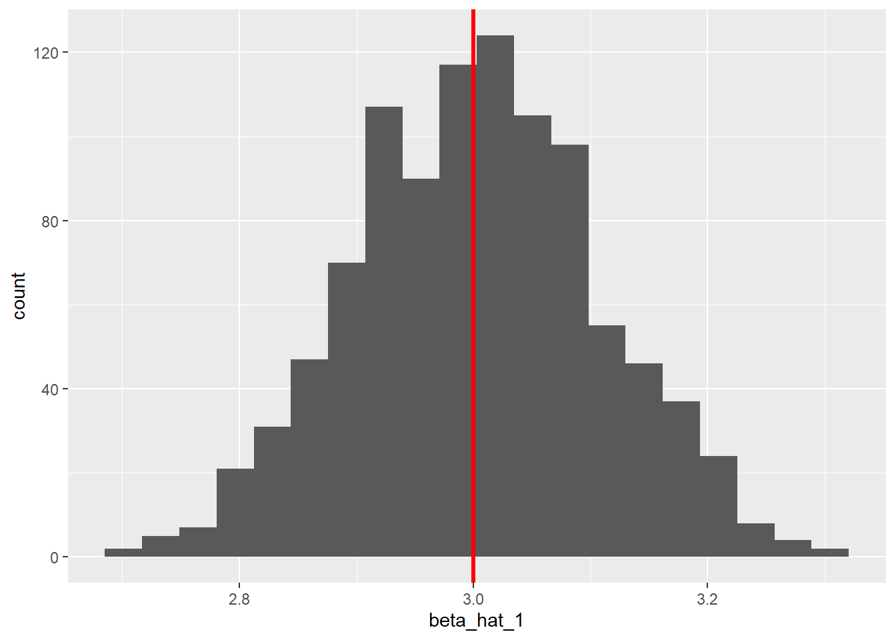

Chapter 5 Bivariate OLS: The Foundation of Econometric Analysis
We will work through the Computing Corner.
5.1 Estimating a simple regression
To run a simple regression in R, call the function lm().
5.1.1 A short detour on some R basics.
Some basic principles of R.
- Everything in R is an object including functions.
- Everything that happens in R is a function call.
- function calls act on objects
- function calls return objects
- objects returned by function calls may be used in function calls
It may help to think of objects as nouns and function calls as verbs.
Objects are created with the assignment operator <- (keyboard shortcut: Alt + -). We can name an object almost anything we’d like.1 It is good practice to avoid function names like c, T, mean, etc., to not avoid starting a name with a number, to putting spaces in names. See The tidyverse style guide for an example of a consistent philosophy. We advocate the use of snake case when naming objects with longer names, e.g., we might name GDP per capita as gpd_per_capita. So we might assign 95 to the current temperature like this:
Functions act on objects and return objects. Calling a function means to “run” it. All functions have two broad categories of arguments one that supplies the data (object) to be acted on and another to control the details of the computation. Let’s look at the function call mean() as an example.
mean has a data argument x and two control arguments trim and na.rm.2 x is an R object, typically a vector. trim is argument that controls the fraction of observations to be ignored on each end of x when calculating the mean. trim has default value of 0 (trim = 0). The na.rm argument controls whether mean ignores NAs in the data. The default value is FALSE (na.rm = FALSE). Since the control arguments have default values, the mean requires you give it only one argument to run, x. Of course, you can change the default values of any control arguments.
R evaluates (looks for arguments in) functions in 3 steps. First it uses exact matching of the argument name. If the arguments aren’t named exactly, it uses partial matching of the argument name. Finally, it uses the position of the argument. All arguments do not have to be specified. Arguments not specified will use default values. If an argument necessary to the function call is not used R will throw an error.
Good practice in calling functions requires that we specify non-optional arguments first in our function calls and that we specify the names of all optional arguments. Good practice yields easier code auditing and editing and replicability.
Let’s look at the ways we can call mean()
# let's assign an object y.
y <- c(NA, 1:10, NA)
# we can name the arguments exactly
mean(x = y, trim = 0, na.rm = TRUE)[1] 5.5[1] 5.5[1] 5.5Notice in each case mean() returned a vector of length 1, that’s why the [1] precedes the value of the mean. The object returned by a function call can be used as an argument in subsequent function call. For example, suppose we’d like to take the square root of the mean we just calculated. We can pass the object returned by the mean to the function sqrt() as an argument like this:
[1] 2.35We could do this repeatedly. Let’s take the log of that.
[1] 0.852As you might imagine, after a while this “nesting” process get’s ugly and difficult to follow fast. This is where the pipe operator %>% (keyboard short-cut Ctrl-Shift-M) shines. The pipe operator %>% works by making the object preceding it the first argument in the function call following it. Let the bar be the firs argument in the function call foo, we could call the function like this foo(bar) or using the pipe operator like this bar %>% foo(). In simple cases like this there isn’t much to gained from the pipe operator.3 The pipe operator shines when multiple function calls are performed in a sequence. It prevents ugly nesting or having to create assign intermediate objects to call functions on later. Below is the code from above using the %>% operator.
[1] 0.852While code is written to get R to do something it is also written for and by human beings. We can translate this code like this “take y, then calculate its mean while removing NA’s, then take the square root, then take the log.”
We can find the arguments and their default values, if any, in a variety of ways in R Studio. To estimate a regression, call the function lm(). Let’s find the arguments required by lm() to estimate a simple linear regression.
If we simply want a list of the arguments for any function call args() with the function name as the argument.4 args(lm) will return the arguments for the lm function.
function (formula, data, subset, weights, na.action, method = "qr",
model = TRUE, x = FALSE, y = FALSE, qr = TRUE, singular.ok = TRUE,
contrasts = NULL, offset, ...)
NULLTo get more detailed information on the function call and the arguments use ?function_name. This opens the help page in the Files/Plots/Packages/Help Pane, which can also be accessed by typing “lm” in the search in the same pane. Below we see a portion of the help on lm.
5.1.2 Estimating an OLS model
Estimating a regression using lm requires only one argument, a formula.5 Formulas are structured with a ~. To estimate \(y_i=\beta_0+\beta_1x_i+\epsilon_i\) the formula argument takes the form y ~ x. If x and y exist in the global environment, e.g. not in data frame, run the regression by calling lm(y ~ x).
# create y and x in the global environment as follows
y <- c(275, 141, 70, 75, 310, 80, 160, 263, 205, 185, 170, 155, 145)
x <- c(14, 0, 0, 5, 20, 0.75, 0.25, 16, 3, 2, 0.80, 5, 4)
# estimate the regression
lm(y ~ x)
Call:
lm(formula = y ~ x)
Coefficients:
(Intercept) x
121.61 9.22 It is typically impractical to use data (variables) within the global environment. Data sets are typically collected together in data frames. When data “live” in data frame lm requires a second argument to find the data.
Let’s estimate the regression \(\textit{weight}_i = \beta_0+\beta_1\textit{donuts per week}_i+\epsilon_i\). The data are in a data frame named donuts.
Call:
lm(formula = weight ~ donuts_per_week, data = donuts)
Coefficients:
(Intercept) donuts_per_week
121.61 9.22
Call:
lm(formula = weight ~ donuts_per_week, data = donuts)
Coefficients:
(Intercept) donuts_per_week
121.61 9.22 Recall that the pipe operator %>% makes an object the first argument in a function call. So, it appears that we are out of look if we’d like to use it to pipe the data into an lm call. Appearances aside, we can use %>% any function call to insert an object into as an argument in any position in the argument list by using the “pronoun” .. The object will be place wherever the pronoun is.
Call:
lm(formula = weight ~ donuts_per_week, data = .)
Coefficients:
(Intercept) donuts_per_week
121.61 9.22
Call:
lm(formula = weight ~ donuts_per_week, data = .)
Coefficients:
(Intercept) donuts_per_week
121.61 9.22 There are advantages to using %>%. It allows auto-completion of variable names because R knows which data frame we are using. Later we will see that the use of %>% will simplify things like subsetting, creating new variables, etc.
5.1.2.1 Viewing the output
lm prints the values of the coefficients. Where are the fitted values, residuals, statistics, etc?
Since lm is a function call it must return an object…it does. The object returned by lm is a special kind of vector called a list. This is where the fitted values, ect. “live”. Let’s look at the list.
List of 12
$ coefficients : Named num [1:2] 121.61 9.22
..- attr(*, "names")= chr [1:2] "(Intercept)" "donuts_per_week"
$ residuals : Named num [1:13] 24.26 19.39 -51.61 -92.73 3.92 ...
..- attr(*, "names")= chr [1:13] "1" "2" "3" "4" ...
$ effects : Named num [1:13] -619.6 215.66 -60.24 -99.06 4.49 ...
..- attr(*, "names")= chr [1:13] "(Intercept)" "donuts_per_week" "" "" ...
$ rank : int 2
$ fitted.values: Named num [1:13] 251 122 122 168 306 ...
..- attr(*, "names")= chr [1:13] "1" "2" "3" "4" ...
$ assign : int [1:2] 0 1
$ qr :List of 5
..$ qr : num [1:13, 1:2] -3.606 0.277 0.277 0.277 0.277 ...
.. ..- attr(*, "dimnames")=List of 2
.. ..- attr(*, "assign")= int [1:2] 0 1
..$ qraux: num [1:2] 1.28 1.31
..$ pivot: int [1:2] 1 2
..$ tol : num 0.0000001
..$ rank : int 2
..- attr(*, "class")= chr "qr"
$ df.residual : int 11
$ xlevels : Named list()
$ call : language lm(formula = weight ~ donuts_per_week, data = .)
$ terms :Classes 'terms', 'formula' language weight ~ donuts_per_week
.. ..- attr(*, "variables")= language list(weight, donuts_per_week)
.. ..- attr(*, "factors")= int [1:2, 1] 0 1
.. .. ..- attr(*, "dimnames")=List of 2
.. ..- attr(*, "term.labels")= chr "donuts_per_week"
.. ..- attr(*, "order")= int 1
.. ..- attr(*, "intercept")= int 1
.. ..- attr(*, "response")= int 1
.. ..- attr(*, ".Environment")=<environment: 0x000001669da6e268>
.. ..- attr(*, "predvars")= language list(weight, donuts_per_week)
.. ..- attr(*, "dataClasses")= Named chr [1:2] "numeric" "numeric"
.. .. ..- attr(*, "names")= chr [1:2] "weight" "donuts_per_week"
$ model :'data.frame': 13 obs. of 2 variables:
..$ weight : num [1:13] 275 141 70 75 310 80 160 263 205 185 ...
..$ donuts_per_week: num [1:13] 14 0 0 5 20 0.75 0.25 16 3 2 ...
..- attr(*, "terms")=Classes 'terms', 'formula' language weight ~ donuts_per_week
.. .. ..- attr(*, "variables")= language list(weight, donuts_per_week)
.. .. ..- attr(*, "factors")= int [1:2, 1] 0 1
.. .. .. ..- attr(*, "dimnames")=List of 2
.. .. ..- attr(*, "term.labels")= chr "donuts_per_week"
.. .. ..- attr(*, "order")= int 1
.. .. ..- attr(*, "intercept")= int 1
.. .. ..- attr(*, "response")= int 1
.. .. ..- attr(*, ".Environment")=<environment: 0x000001669da6e268>
.. .. ..- attr(*, "predvars")= language list(weight, donuts_per_week)
.. .. ..- attr(*, "dataClasses")= Named chr [1:2] "numeric" "numeric"
.. .. .. ..- attr(*, "names")= chr [1:2] "weight" "donuts_per_week"
- attr(*, "class")= chr "lm"The list contains 12 elements. Here are some we are likely to interested in:
- coefficients
- residuals
- fitted values
- df.residual
Let’s assign this list to the object lm_donuts
We can extract any of the elements of the list with one of three operators $ [ [[ and the name of the element or its position in the list. Each of these operators returns an object $ and [[ return vectors while [ returns a list. Let’s extract the residuals from lm_donuts
1 2 3 4 5 6 7 8 9 10 11 12 13
24.26 19.39 -51.61 -92.73 3.92 -48.53 36.08 -6.19 55.72 44.94 41.01 -12.73 -13.51 1 2 3 4 5 6 7 8 9 10 11 12 13
24.26 19.39 -51.61 -92.73 3.92 -48.53 36.08 -6.19 55.72 44.94 41.01 -12.73 -13.51 $residuals
1 2 3 4 5 6 7 8 9 10 11 12 13
24.26 19.39 -51.61 -92.73 3.92 -48.53 36.08 -6.19 55.72 44.94 41.01 -12.73 -13.51 5.1.2.2 Regression output summaries
There are myriad function calls to “dig out” the elements of an lm list in nicely formatted ways depending on our purpose. Let’s look at a few of them. We can call these functions at the end of a pipeline without the intermediate step of naming the lm object or we can call them on the named object. Let’s do the former for this exercise.
5.1.2.2.1 summary
summary from base R extracts the coefficient estimates, their standard errors, their t-statistics, and their p-values. We also get degrees of freedom, r-squared, adjusted r-squared, F-stat for overall significance and some summary stats on the dependent variable.
Call:
lm(formula = weight ~ donuts_per_week, data = .)
Residuals:
Min 1Q Median 3Q Max
-92.73 -13.51 3.92 36.08 55.72
Coefficients:
Estimate Std. Error t value Pr(>|t|)
(Intercept) 121.61 16.59 7.33 0.000015 ***
donuts_per_week 9.22 1.96 4.71 0.00064 ***
---
Signif. codes: 0 '***' 0.001 '**' 0.01 '*' 0.05 '.' 0.1 ' ' 1
Residual standard error: 45.8 on 11 degrees of freedom
Multiple R-squared: 0.668, Adjusted R-squared: 0.638
F-statistic: 22.2 on 1 and 11 DF, p-value: 0.0006435.1.2.2.2 The broom package
The broom package has three functions that extract different elements of the lm object and always return a tibble. Rather than loading the broom package with library we will use it direclty by using its name and ::.
# A tibble: 2 x 5
term estimate std.error statistic p.value
<chr> <dbl> <dbl> <dbl> <dbl>
1 (Intercept) 122. 16.6 7.33 0.0000149
2 donuts_per_week 9.22 1.96 4.71 0.000643 # A tibble: 1 x 12
r.squared adj.r.squared sigma statistic p.value df logLik AIC BIC deviance df.residual
<dbl> <dbl> <dbl> <dbl> <dbl> <dbl> <dbl> <dbl> <dbl> <dbl> <int>
1 0.668 0.638 45.8 22.2 6.43e-4 1 -67.1 140. 142. 23088. 11
# ... with 1 more variable: nobs <int># A tibble: 13 x 8
weight donuts_per_week .fitted .resid .std.resid .hat .sigma .cooksd
<dbl> <dbl> <dbl> <dbl> <dbl> <dbl> <dbl> <dbl>
1 275 14 251. 24.3 0.596 0.211 47.3 0.0474
2 141 0 122. 19.4 0.454 0.131 47.6 0.0156
3 70 0 122. -51.6 -1.21 0.131 44.7 0.110
4 75 5 168. -92.7 -2.11 0.0773 37.1 0.186
5 310 20 306. 3.92 0.117 0.464 48.0 0.00591
6 80 0.75 129. -48.5 -1.13 0.117 45.2 0.0844
7 160 0.25 124. 36.1 0.843 0.126 46.5 0.0513
8 263 16 269. -6.19 -0.159 0.281 48.0 0.00495
9 205 3 149. 55.7 1.27 0.0879 44.4 0.0781
10 185 2 140. 44.9 1.03 0.0986 45.7 0.0584
11 170 0.8 129. 41.0 0.952 0.116 46.0 0.0597
12 155 5 168. -12.7 -0.289 0.0773 47.9 0.00350
13 145 4 159. -13.5 -0.308 0.0807 47.8 0.004155.1.2.2.3 Publication formatted tables
In addition we can also create publication ready tables. Let’s look at the gt package and the stargazer package.
| term | estimate | std.error | statistic | p.value |
|---|---|---|---|---|
| (Intercept) | 121.61 | 16.59 | 7.33 | 0.0000149 |
| donuts_per_week | 9.22 | 1.96 | 4.71 | 0.0006426 |
<table style="text-align:center"><tr><td colspan="2" style="border-bottom: 1px solid black"></td></tr><tr><td style="text-align:left"></td><td><em>Dependent variable:</em></td></tr>
<tr><td></td><td colspan="1" style="border-bottom: 1px solid black"></td></tr>
<tr><td style="text-align:left"></td><td>weight</td></tr>
<tr><td colspan="2" style="border-bottom: 1px solid black"></td></tr><tr><td style="text-align:left">donuts_per_week</td><td>9.220<sup>***</sup></td></tr>
<tr><td style="text-align:left"></td><td>(1.960)</td></tr>
<tr><td style="text-align:left"></td><td></td></tr>
<tr><td style="text-align:left">Constant</td><td>122.000<sup>***</sup></td></tr>
<tr><td style="text-align:left"></td><td>(16.600)</td></tr>
<tr><td style="text-align:left"></td><td></td></tr>
<tr><td colspan="2" style="border-bottom: 1px solid black"></td></tr><tr><td style="text-align:left">Observations</td><td>13</td></tr>
<tr><td style="text-align:left">R<sup>2</sup></td><td>0.668</td></tr>
<tr><td style="text-align:left">Adjusted R<sup>2</sup></td><td>0.638</td></tr>
<tr><td style="text-align:left">Residual Std. Error</td><td>45.800 (df = 11)</td></tr>
<tr><td style="text-align:left">F Statistic</td><td>22.200<sup>***</sup> (df = 1; 11)</td></tr>
<tr><td colspan="2" style="border-bottom: 1px solid black"></td></tr><tr><td style="text-align:left"><em>Note:</em></td><td style="text-align:right"><sup>*</sup>p<0.1; <sup>**</sup>p<0.05; <sup>***</sup>p<0.01</td></tr>
</table>There are multiple arguments for each of these function calls to change the appearance of any of the tables. Reading the vignettes for each for guidance.
5.2 Scatter Plot with Regression Line
ggplot2 makes adding a fitted regression line to a scatter plot very easy. You need only add a geometry called geom_smooth with the appropriate method argument to plot. The default is to include a confidence interval estimate around the fitted line. To remove the error band include the argument se = FALSE.
Let’s start with the scatter diagram.
donuts %>%
ggplot(aes(x = donuts_per_week, y = weight)) +
geom_point() +
labs(x = "Donuts per week",
y = "Weight")Adding the regression line means adding an additional layer.
5.3 Subsetting Data for Regressions
There are a few ways to subset data to use in the lm call: the [ operator, the subset argument, or dplyr::filter.
5.3.1 The [ operator
The [ operator is the most basic way to subset vectors in R. We can exclude Homer’s observation directly in the lm call like this:
Call:
lm(formula = weight[name != "Homer"] ~ donuts_per_week[name !=
"Homer"], data = donuts)
Residuals:
Min 1Q Median 3Q Max
-90.58 -20.99 7.26 37.24 56.90
Coefficients:
Estimate Std. Error t value Pr(>|t|)
(Intercept) 121.87 17.13 7.12 0.000032 ***
donuts_per_week[name != "Homer"] 8.74 2.19 4.00 0.0025 **
---
Signif. codes: 0 '***' 0.001 '**' 0.01 '*' 0.05 '.' 0.1 ' ' 1
Residual standard error: 47.3 on 10 degrees of freedom
Multiple R-squared: 0.615, Adjusted R-squared: 0.577
F-statistic: 16 on 1 and 10 DF, p-value: 0.00252Let’s subset the donuts data frame to exclude Homer’s record. Data frames have two dimensions rows and columns (df[r,c]) To subset a data frame using [ by row, write the requirement for the row in position r and leave position c blank (means use all columns).
Call:
lm(formula = weight ~ donuts_per_week, data = donuts[donuts$name !=
"Homer", ])
Residuals:
Min 1Q Median 3Q Max
-90.58 -20.99 7.26 37.24 56.90
Coefficients:
Estimate Std. Error t value Pr(>|t|)
(Intercept) 121.87 17.13 7.12 0.000032 ***
donuts_per_week 8.74 2.19 4.00 0.0025 **
---
Signif. codes: 0 '***' 0.001 '**' 0.01 '*' 0.05 '.' 0.1 ' ' 1
Residual standard error: 47.3 on 10 degrees of freedom
Multiple R-squared: 0.615, Adjusted R-squared: 0.577
F-statistic: 16 on 1 and 10 DF, p-value: 0.00252We can pipe this into the lm call.
Call:
lm(formula = weight ~ donuts_per_week, data = .)
Coefficients:
(Intercept) donuts_per_week
121.87 8.74 5.3.2 Subset argument
Subsetting can be directly done with the subset argument in the lm call. To run a regression that excludes the Homer observation, use the option subset = (name != "Homer")6
Call:
lm(formula = weight ~ donuts_per_week, data = ., subset = (name !=
"Homer"))
Coefficients:
(Intercept) donuts_per_week
121.87 8.74 5.3.3 dplyr::filter
Alternatively we can make use of filter from the dplyr package. Recall, filter is the data manipulation verb that chooses observations in a data frame. filter is easier for human reading and auditing.
Call:
lm(formula = weight ~ donuts_per_week, data = .)
Coefficients:
(Intercept) donuts_per_week
121.87 8.74 To include those observations where weight is greater than 100:
Call:
lm(formula = weight ~ donuts_per_week, data = .)
Coefficients:
(Intercept) donuts_per_week
151.05 7.66 5.4 Heteroscesdasticity-consistent standard errors.
The estimatr package allows you to directly calculate robust standard errors.
Install the package by calling install.packages("estimatr")
R Studio allows you to install packages in the Files/Plots/Packages/Help Pane by clicking on the Install icon on the Packages tab; as you type the name of the package, you will see completion suggestions. Choose the package you wish to install and R Studio will install it.
Call lm_robust() to estimate an OLS model with robust standard errors with the se_type = "HC0 argument for the most common method of generating robust standard errors.
Call:
lm_robust(formula = weight ~ donuts_per_week, data = ., se_type = "HC0")
Standard error type: HC0
Coefficients:
Estimate Std. Error t value Pr(>|t|) CI Lower CI Upper DF
(Intercept) 121.61 15.87 7.66 0.00000983 86.68 156.5 11
donuts_per_week 9.22 1.02 9.07 0.00000194 6.99 11.5 11
Multiple R-squared: 0.668 , Adjusted R-squared: 0.638
F-statistic: 82.3 on 1 and 11 DF, p-value: 0.00000194 term estimate std.error statistic p.value conf.low conf.high df outcome
1 (Intercept) 121.61 15.87 7.66 0.00000983 86.68 156.5 11 weight
2 donuts_per_week 9.22 1.02 9.07 0.00000194 6.99 11.5 11 weight5.5 Generating Random Numbers
Random numbers can be useful in variety of applications in econometrics. One application is simulation, where we simulate observations to demonstrate properties of OLS estimators, e.g. Once you’ve decided the distribution from which your random numbers will be drawn and the number of draws you wish to make, you will create a vector of those observations.
The most intuitive form of random number generation is sample. Suppose you wanted to simulate the role of a single die, use sample(1:6,1) or using the pipe operator 1:6 %>% sample(1). Read the command aloud like this “from the integers 1, 2, 3, 4, 5, 6, choose a sample of size 1.” You can choose larger samples by changing the size argument. The size argument can not be larger than the number of integers unless the default argument replace = FALSE, is changed to replace = TRUE. To generate a simulation of 100 rolls of a single die call 1:6 %>% sample(100, replace = TRUE).
Random numbers may be generate from any probability distribution. The random number generator function for a given probability distribution begins with the letter r followed by the name of the distribution in r. To generate uniform random numbers between 0 and 1, use runif, from a normal distribution use rnorm, etc. Use args(distribution name) or ?distribution name to find out more about the necessary arguments for individual distributions.
5.6 Simulations
Monte Carlo simulations are a useful tool for understanding how the value of an estimator changes as the sample data changes. Consider the example of rolling a single die n times and calculating the average number of pips on the side-up face of the die. We know that \(\bar X\) is an unbiased estimator of \(\mu\). Recall that any estimator, \(\hat\theta\) is an unbiased estimator of \(\theta\) if \(E(\hat\theta) = \theta\). We can show that \(E(\bar X) = \mu\). Let \[\bar X = \frac{\sum{x_i}}{n}\]
Then, \[\begin{aligned} E(\bar{X}) &= E\left( \frac{\sum{x_i}}{n} \right)\\ &= \frac{1}{n}\sum{E(x_i)} \\ &= \frac{1}{n}\sum{\mu}\\ &= \frac{1}{n}n\mu\\ &= \mu \end{aligned}\]
So, we would expect \(\bar X = 3.5\) since \(\mu = 3.5\). Simulating 100 rolls of a single die 1000 times would allow us to look at the sampling distribution of the sample mean. This will allow us to see the range of values that \(\bar X\) might take on.
Perform a Monte Carlo simulation by generating many samples, find the value of the estimator, and investigating it’s distribution. We could do this by generating a single sample, calculating the value of the estimator, and repeating the desired number of times. This would be tedious. We can instead make use of the concept of a loop in R. A loop evaluates the same code repeatedly until some threshold is met.
There are two types of loops in R, for loops and while loops. A for loop runs the code a specific number of times; a while loop runs the code until a logical condition is met. We will use a for loop to run our simulation. First, instruct R on the number of times to run through the loop. The loop itself is contained between the braces {}.
xbar <- numeric() # initialize the vector to store the observations of x bar
for(i in 1:1000) {
x <- 1:6 %>% sample(100, replace = T)
xbar[i] <- mean(x)
}
xbar %>%
mean() # find the mean of the 1000[1] 3.51xbar %>%
as.data.frame() %>% # coerce xbar to a data frame
ggplot(aes(x = xbar)) + # map xbar to x
geom_density() + # geom_density creates a "probability distribution"
geom_vline(xintercept = 3.5) # place a vertical line at the mean.
We could do the same thing with the simple linear regression \(Y_i = \beta_0+\beta_1X_i+\epsilon_i\). We know the OLS estimator of \(\beta_1\) is \(\hat\beta_1\). The value of the estimator, called the estimate, depends upon the particular sample that is drawn. Monte Carlo simulation will allows to see how the estimate changes across many samples.
For \(\hat\beta_j\) to be an unbiased estimator of \(\beta_j\), \(E(\hat\beta_j) = \beta_j\). The proof is beyond the scope of this manual, but you will see or have seen the proof.
Suppose we perform a Monte Carlo simulation with know values of \(\beta_0\) and \(\beta_1\) where the error term \(\epsilon_i\) is drawn from a normal distribution with a mean of zero and a constant variance, i.e., \(\epsilon_i ~ N(0, \sigma^2)\), will the estimates be statistically the same as the known parameters. Let’s find out. Suppose the population regression function is \(y_i = 10 + 3x_i\),
n <- 50 # sample size
N <- 1000 # of simulations
beta_0 <- 10 # assign the value of the intercept parameter
beta_1 <- 3 # assign the value of the slope parameter
beta_hat_0 <- numeric(length = N) #initialize the vector for beta0 estimates
beta_hat_1 <- numeric(length = N) #initialize the vector for beta1 estimates
y <- numeric(length = N) #initialize the vector for the y values
# create x randomly
x <- 1:10 %>% sample(n, replace = T) # keep it fixed in repeated samples
# run the simulation
for(i in 1:N) {
epsilon <- rnorm(n, 0 , 2) # create the random error
y <- beta_0 + beta_1*x + epsilon
beta_hat_0[i] <- lm(y ~ x)$coef[1]
beta_hat_1[i] <- lm(y ~ x)$coef[2]
}
# write the betas to a tibble
beta_hats <- tibble(beta_hat_0, beta_hat_1)Let’s look at the mean values of the estimators, using dplyr::summarize
# A tibble: 1 x 2
mean_beta_hat_0 mean_beta_hat_1
<dbl> <dbl>
1 9.98 3.00Let’s look at the histograms.
beta_hats %>%
ggplot(aes(x = beta_hat_0)) +
geom_histogram(binwidth = .5) +
geom_vline(xintercept = 10, color = "red", size = 1.2)
beta_hats %>%
ggplot(aes(x = beta_hat_1)) +
geom_histogram(bins = 20) +
geom_vline(xintercept = 3, color = "red", size = 1.2)
Call
?Reservedto see names that you can’t use.↩︎The … represent further arguments passed to or from other methods.↩︎
Possibly it is clear to say take
barand dofooto it than to say dofooonbar.↩︎Remember everything in R is an object–even a function!↩︎
This is one of few functions that does not have the data as its first argument.↩︎
We will use
%>%to avoid having to assign thelmobject as an intermediate step.↩︎